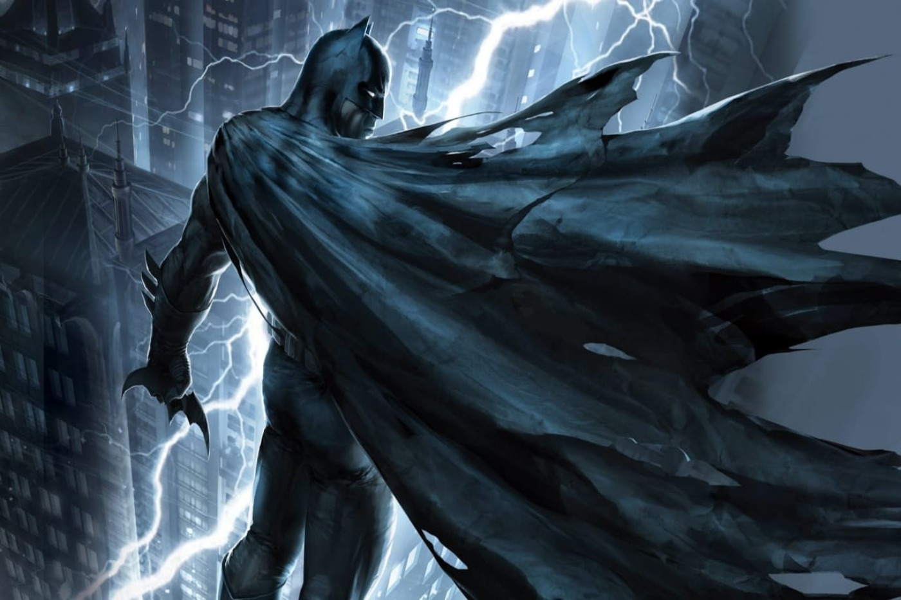
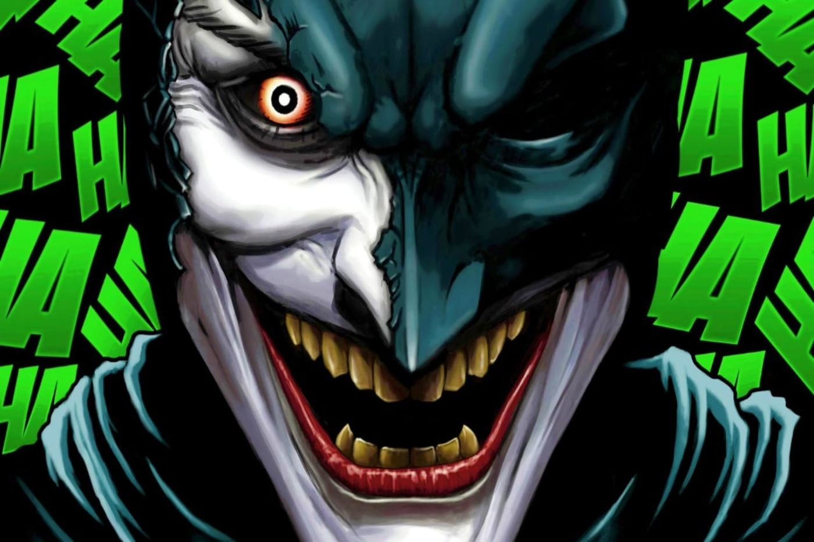
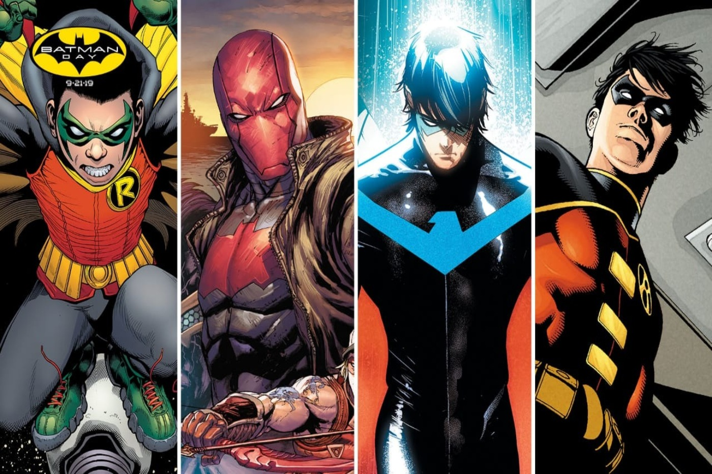
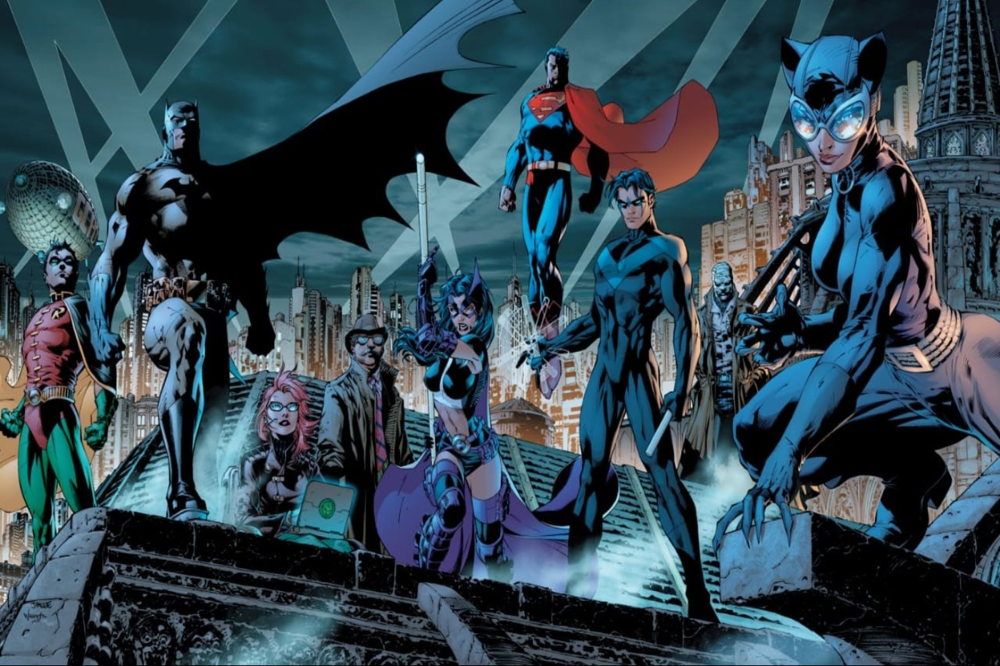

Batman 'The Dark Knight'
 Madina Kopenova
March 9, 2020
Madina Kopenova
March 9, 2020
The dark knight, guardian of the Gotham, Son of a Gotham, Millionaire Bruce Wayne or just Batman is a legendary fictional superhero by comicbook DC. He is definitely the most famous and the best superhero ever. Even if he doesn't have any super powers he could overcome any other heroes from comics. His power is his fabulous intelligence and his multi-million dollars, he is actually a genius. Bruce Wayne is a son of a popular businessman Thomas Wayne who was killed with his wife in front of his son. After a murder of his parents Bruce started to live with his servant Alfred Pennyworth, whom he calls a friend. From the early childhood he starts to train the greatest things, as physically so emotionally. He started to prepare for protection of his city from criminals and psychopaths. Unlike the criminals he confronts, Batman never kills anyone and never takes revenge on anyone.

VILLAINS OF BATMAN
The villains of Batman is a separate art. The Joker, Two Face, Ras Al' Gul, The Riddler, Deathstroke, Penguin and others are one of the best villains of all comics ever. Every one is better than other. Their evil plans are just genius plans. No comics writer could not make such a perfect criminals as Batman's. The most popular villain is 'The Joker'. Nobody knows his real name, date of birth and parents. He is actuall no name. His intelligence is not inferior to Batman, sometimes he is smarter than Batman. His main style is his extraordinal makeup, green hair and obsession the purple color. He is a great actor and real genius who doesn't have any competitor.
ROBINS OF BATMAN
The most popular Batman's partner is 'Robin'. But Robin is not a one person. Batman had 4 different Robins. First one is a son of dead circus players Dick Grayson, very flexible and obedient guy. After some years he grows up, walks away from Batman and becomes a superhero called 'Nightwing'. After that Bruceadopts an bully orphan Jason Todd. He was a rebellious guy and after a couple years he dies because of Joker. Nevertheless he reborns by the power of Ras Al' Gul and becomes the villain 'Redhood' who will be a superhero anyways. Third Robin is the famous one - Tim Drake. When he grows up he becomes 'Red Robin' who will search for a Batman who was murdered. The last Robin is his and Talia Al' Gul's son Damian Wayne who is very currish and ill-mannered. Whoever he had as a Robin, he could find a way to bring them up.



Bat Family
Bat Family has lots of superheroes and characters. The main members are: Commissioner Gordon, Batgirl, Batwoman, Catwoman, Nightwing, Red Robin, Redhood, Robin and others.
Madina Kopenova
Batman is just a symbol of willpower and justice. Brave and courageous.